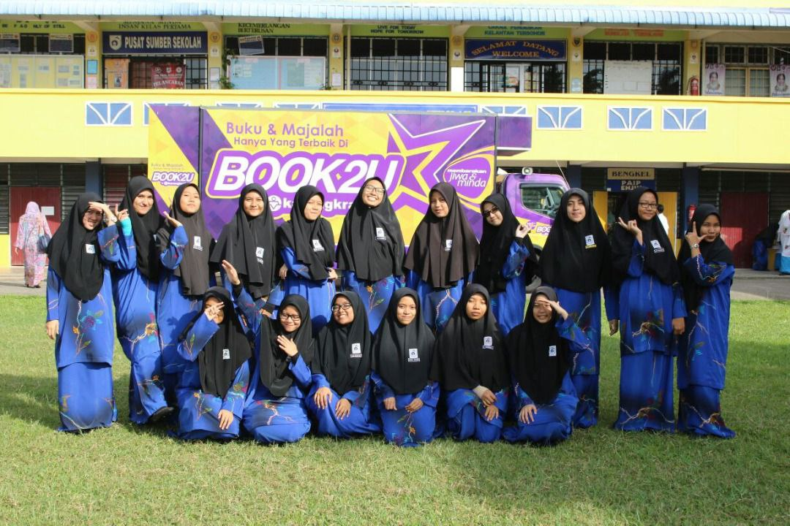
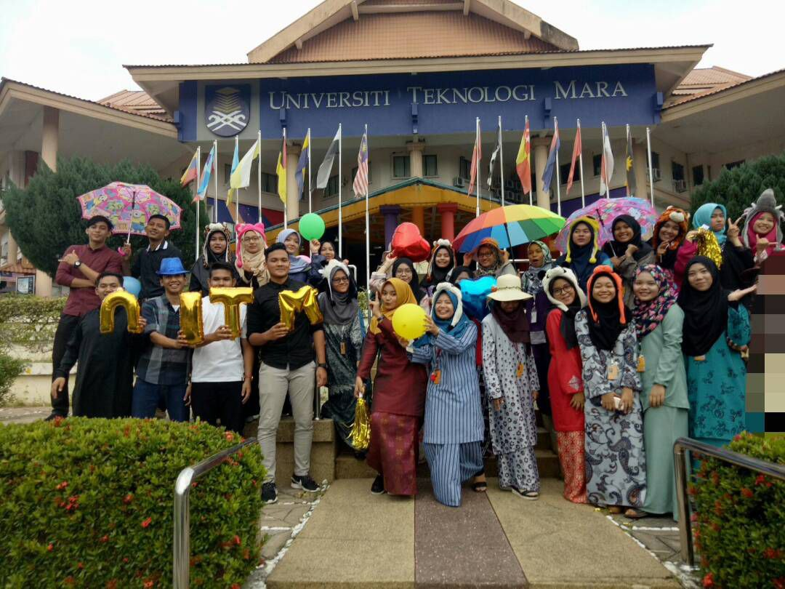

EDUCATION
SEK KEB PEROL
My primary school was one of the best schools in my town, I spent a great time there. Here, I start learn ABC 123 and never skip classes because I enjoyed learn new things. Alhamdulillah, I got 5A’s in UPSR 2011.

SEK MEN KEB ISMAIL PETRA
Time flies so fast. Looking back, my high school is just like a movie, a lot of things happened. High School is 5 years of growing up and probably a time in my life where I go through the most changes.

UiTM MACHANG
University is the best time of my life. I have to learn how to balance my academic work and social life. University life is rightly said that the amazing and memorable time of every student’s life. There is a huge number of opportunities to groom my personality in a positive way.